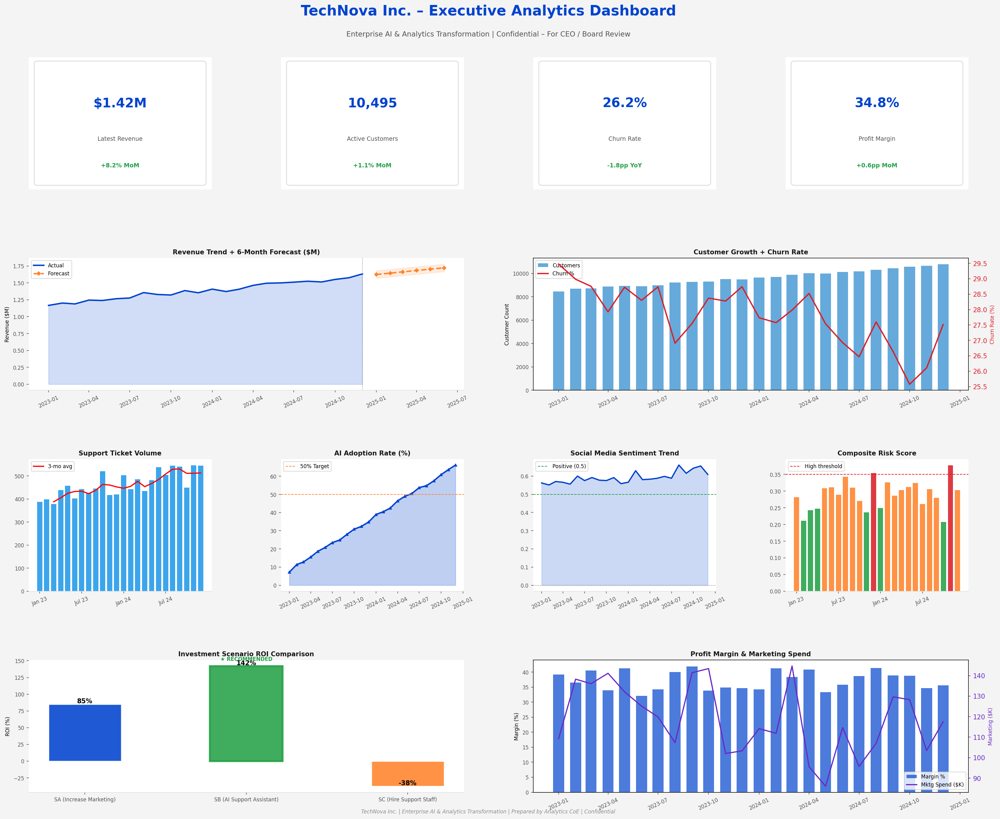
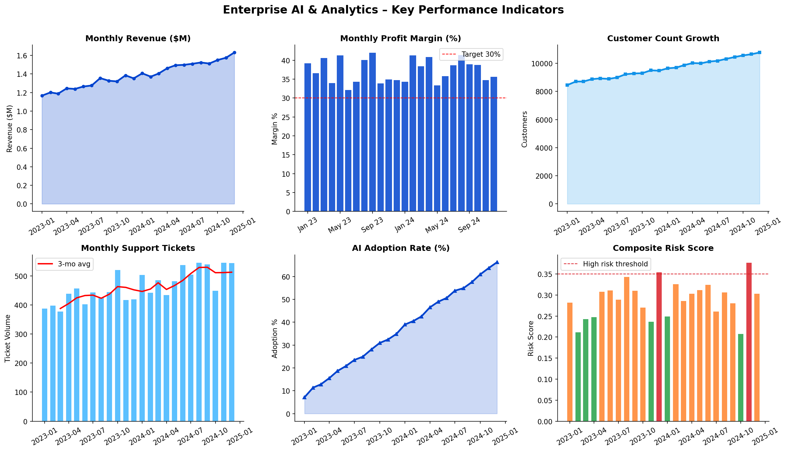
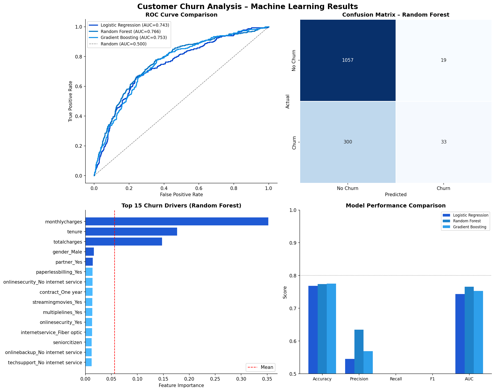
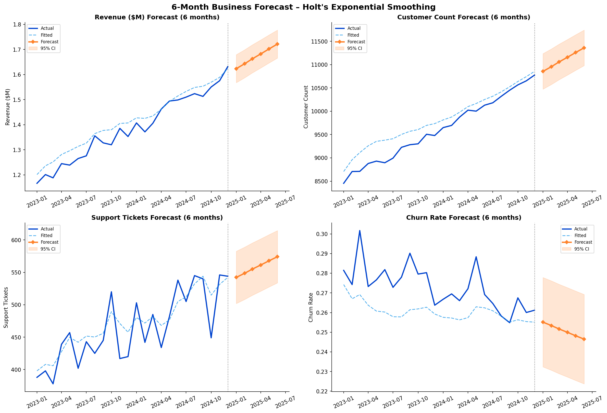

Mathematics (Data Science) Student • 3.9 GPA • Fall 2026 Graduate
Aspiring AI & Analytics professional with a strong foundation in mathematics, machine learning, business analytics, and executive reporting. Experienced in developing predictive models, KPI frameworks, forecasting solutions, and data-driven recommendations that support strategic decision-making. Passionate about AI, enterprise analytics, cloud technologies, and solving complex business challenges.
🎓 Austin Peay State University
📈 GPA: 3.9
🎯 Expected Graduation: Fall 2026
🤖 Data Science • AI • Cybersecurity • Cloud Computing
I am a Mathematics major with a Data Science concentration at Austin Peay State University, maintaining a 3.9 GPA and graduating in Fall 2026.
My academic work focuses on machine learning, data analysis, natural language processing, and reinforcement learning. I enjoy building projects that combine data, AI, and software development to solve practical problems and create useful tools.
B.S. Mathematics with Data Science Concentration
Current GPA: 3.9
Expected Graduation: Fall 2026
Machine Learning • Regression Analysis • Linear Models • Data Visualization • Natural Language Processing • Statistical Computing • SAS Programming • Calculus I–III
Python • R • SQL • SAS • Swift
Machine Learning • Business Analytics • Forecasting • KPI Development • Executive Reporting • Data Visualization
NLP • Reinforcement Learning • Chatbots • AI Automation
GitHub • VS Code • Xcode • Power BI • ChatGPT • Claude • Gemini




IBM-style consulting project combining customer churn analytics, KPI development, forecasting, executive dashboards, risk analysis, social media analytics, and investment optimization.
Developed an end-to-end analytics solution using the IBM Telco Customer Churn dataset and simulated enterprise business metrics to support executive decision-making.
Technologies: Python, Pandas, Scikit-Learn, Forecasting, Business Analytics, Executive Dashboards
Regression analysis using R, model comparison, diagnostics, and statistical inference.
Technologies: R, Linear Regression, Statistical Inference
View on GitHub →Exploratory data analysis of aircraft accident data using R, data cleaning, and visualization.
Technologies: R, Tidyverse, ggplot2, Data Cleaning, Data Visualization, dplyr
View on GitHub →Machine learning and NLP project using Python to classify customer reviews.
Technologies: Python, Scikit-learn, NLP, Pandas
View on GitHub →Q-learning project where an agent learns to navigate a maze using rewards and penalties.
Technologies: Python, NumPy, Q-Learning, Reinforcement Learning
View on GitHub →SwiftUI iOS app with speech recognition, AI-assisted summaries, and training analytics.
Technologies: Swift, SwiftUI, Speech Recognition, OpenAI API
View on GitHub →Python chatbot that provides Pokémon information, strengths, weaknesses, and battle predictions.
Technologies: Python, NLP, Chatbot Development
View on GitHub →AWS Cloud Computing • Cybersecurity • AI Automation • SwiftUI Development
Email: nanahowe22@outlook.com
LinkedIn: linkedin.com/in/nanalise-howe
GitHub: github.com/NanaliseH